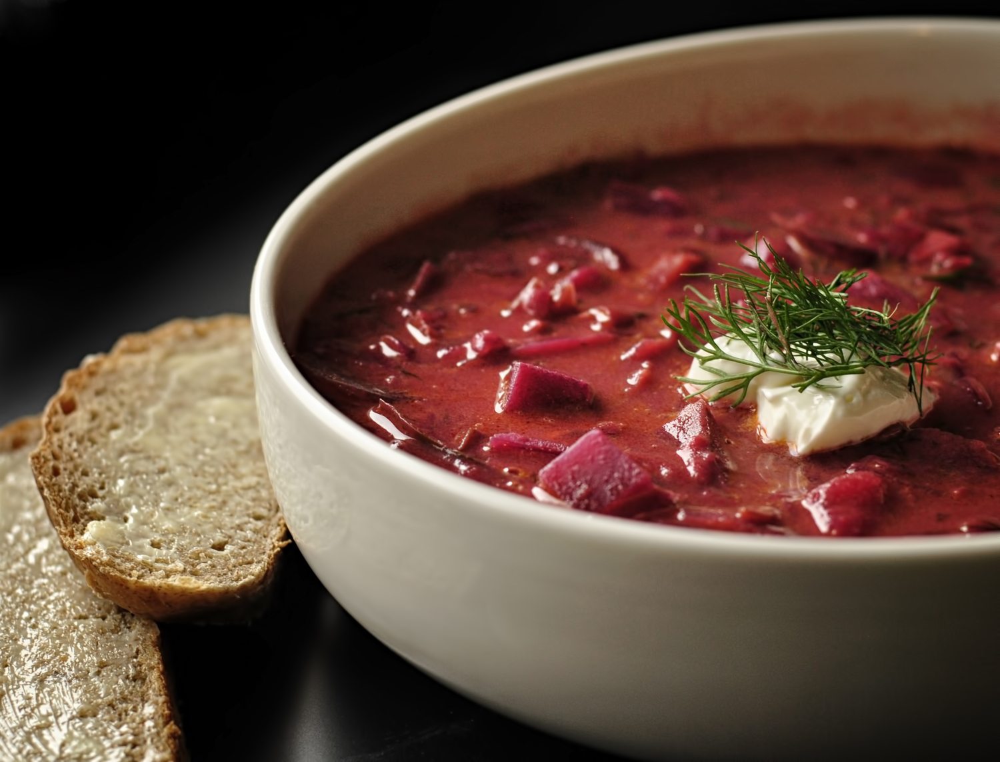

Borscht

This is the best borscht I have ever eaten. Double the recipe, because it freezes well.
-
prep:
25 mins
-
cook:
1 hr
-
total:
1 hr 25 mins
- Servings:
8
- Yield:
8 servings
Ingredients
- 6 cups water
- 3/4 tablespoon salt
- 1/2 cup finely chopped carrots
- 1/4 cup chopped green bell pepper, divided
- 1/2 stalk celery, chopped
- 1 medium beet
- 1/2 cup canned peeled and diced tomatoes
- 3 potatoes, quartered
- 1/3 cup butter
- 1/2 cup chopped onion
- 1 1/2 cups canned tomatoes
- 3 cups finely shredded cabbage, divided
- 1/4 cup heavy cream
- 3/4 cup diced potatoes
- 1 tablespoon dried dill weed
- 1/4 teaspoon ground black pepper to taste
- salt and freshly ground black pepper to taste
Steps
- Place water, salt, carrots, 1/2 of the bell pepper, celery, beet, tomatoes, and quartered potatoes in a
large stock pot over high heat. Bring to a boil.
- Melt 1/3 cup butter in a separate skillet over medium heat. Saute onions in butter until tender,
approximately 5 minutes. Stir in tomatoes, reduce heat to medium low, and simmer for 15 minutes. Remove 1/2
cup of sauce from skillet, and set aside. Stir half of the cabbage into the skillet with remaining sauce,
and continue simmering 5 minutes more, or until tender.
- Remove beet from boiling liquid and discard. Remove potatoes with a slotted spoon or tongs, and place in a
bowl with remaining 1 tablespoon of butter and the cream. Mash together until smooth.
- Return the 1/2 cup of reserved onion-tomato sauce to the stock pot. Stir in diced potatoes, and simmer until
just tender but still firm, approximately 5 minutes. Increase heat to a low boil, and stir in remaining
cabbage, tomato sauce, and mashed potatoes. Reduce heat and simmer a few minutes more. Stir in remaining
bell pepper, season with black pepper, and serve.